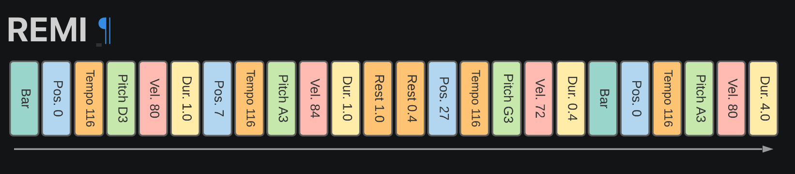
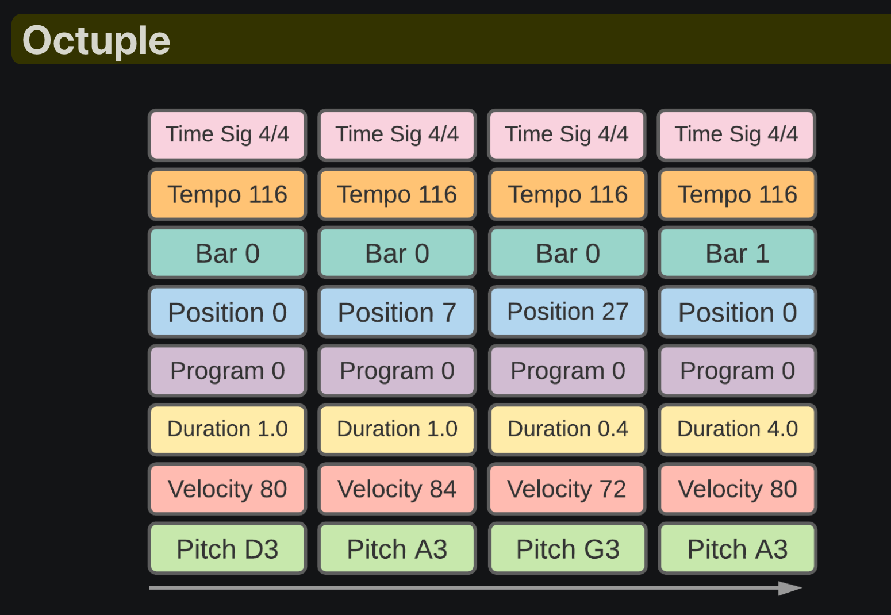

Fine-Tuning the Encodec with the ATEPP audios
We followed the provided training pipelines in the audiocraft
library and fine-tuned the compression model MusicGen_Encodec_32khz with the ATEPP dataset.
Around 7000 performances (~700hs) were used for training. The model was fine-tuned for 40 epochs, taking around 7 hours using two A100 gpus.
More details from the paper: "We use a non-causal five layers EnCodec model for 32 kHz monophonic audio with a stride of 640, resulting in a frame rate of 50 Hz, and an initial hidden size of 64, doubling at each of the model's five layers. The embeddings are quantized with a RVQ with four quantizers, each with a codebook size of 2048. We follow Défossez et al. [2022] to train the model on one-second audio segments cropped at random in the audio sequence."
We randomly selected five reconstructed samples of 10s from the test set as listening examples.
More details from the paper: "We use a non-causal five layers EnCodec model for 32 kHz monophonic audio with a stride of 640, resulting in a frame rate of 50 Hz, and an initial hidden size of 64, doubling at each of the model's five layers. The embeddings are quantized with a RVQ with four quantizers, each with a codebook size of 2048. We follow Défossez et al. [2022] to train the model on one-second audio segments cropped at random in the audio sequence."
We randomly selected five reconstructed samples of 10s from the test set as listening examples.
| Source | Sample A | Sample B | Sample C | Sample D | Sample E |
|---|---|---|---|---|---|
| Groundtruth | |||||
| Encodec (w/o fine-tuning) | |||||
| Encodec (fine-tuned) |
Samples from the Vall-E Model
We have selected four different segments from various performances and compositions,
organized into three distinct groups of samples.
For each group, five types of audio are presented:
When training the Valle model, the MIDI files were first tokenized using a method similar to the one used in the score-to-audio project.
The unoffical implementation of the Vall-E was trained with prompts from the first N (randemly selected, N < 3) seconds of the current uttrance, which is different from the way described in the paper (prompted with segments from other utterace by the same speaker). Considering the recording environments cannot be determined as it may varies even in the same album, we temporarily adopted the unoffical way of implementing the prefixing. With the midi tokenization method, one issue came out as that the ending time of the generation was learned to correlated to the bar value.
In the inference stage, the input midi tokens were constructed in different structure as the training input, for example, given the 3s-prompts and the target synthesised midi as:
- Groundtruth: The original audio segment from the performance.
- Encodec-FT: Audio reconstructed by the 32khz Encodec model, which was fine-tuned as previously described.
- Vall-E + Encodec-FT: Audio generated by the VALLE model, using the fine-tuned Encodec as audio tokenizer.
| Source | Seg1: 05869 | Seg2: 05869 | Seg3: 05869 | Seg4: 05869 |
|---|---|---|---|---|
| Groundtruth | ||||
| Encodec-FT | ||||
| Vall-E + Encodec-FT |
When training the Valle model, the MIDI files were first tokenized using a method similar to the one used in the score-to-audio project.
The unoffical implementation of the Vall-E was trained with prompts from the first N (randemly selected, N < 3) seconds of the current uttrance, which is different from the way described in the paper (prompted with segments from other utterace by the same speaker). Considering the recording environments cannot be determined as it may varies even in the same album, we temporarily adopted the unoffical way of implementing the prefixing. With the midi tokenization method, one issue came out as that the ending time of the generation was learned to correlated to the bar value.
In the inference stage, the input midi tokens were constructed in different structure as the training input, for example, given the 3s-prompts and the target synthesised midi as:
# The midi PROMPT corresponding to the 3s audio prompt
# (Pitch, Velocity, Duration, IOI, Position, Bar)
[[ 1, 1, 1, 1, 1, 1],
[ 40, 37, 10, 388, 7, 4], # -> first note in the first bar
[ 36, 32, 10, 389, 8, 4], # -> second note in the first bar
[ 39, 42, 12, 448, 89, 5],
[ 47, 40, 15, 442, 165, 5],
[ 2, 2, 2, 2, 2, 2]]
# The TARGET midi (the input when training)
# (Pitch, Velocity, Duration, IOI, Position, Bar)
[[ 1, 1, 1, 1, 1, 1],
[ 59, 40, 11, 388, 165, 4],
[ 31, 32, 11, 389, 166, 4],
[ 43, 35, 14, 389, 167, 5],
[ 60, 49, 12, 410, 189, 5],
[ 36, 43, 59, 388, 189, 6],
[ 48, 47, 16, 388, 189, 6],
[ 2, 2, 2, 2, 2, 2]]
# The input for inference would be PROMPT + TARGET
# (Pitch, Velocity, Duration, IOI, Position, Bar)
[[ 1, 1, 1, 1, 1, 1],
[ 40, 37, 10, 388, 7, 4], # -> first note in the first bar
[ 36, 32, 10, 389, 8, 4], # -> second note in the first bar
[ 39, 42, 12, 448, 89, 5],
[ 47, 40, 15, 442, 165, 5],
------------------------------ # -> concatenate
[ 59, 40, 11, 388, 165, 4],
[ 31, 32, 11, 389, 166, 4],
[ 43, 35, 14, 389, 167, 5],
[ 60, 49, 12, 410, 189, 5],
[ 36, 43, 59, 388, 189, 6],
[ 48, 47, 16, 388, 189, 6],
[ 2, 2, 2, 2, 2, 2]]
- REMI
- OCTUPLE

